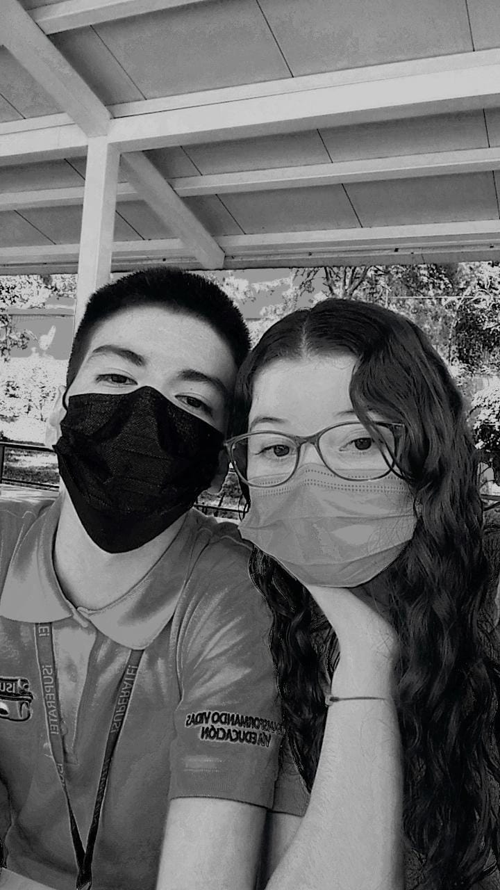
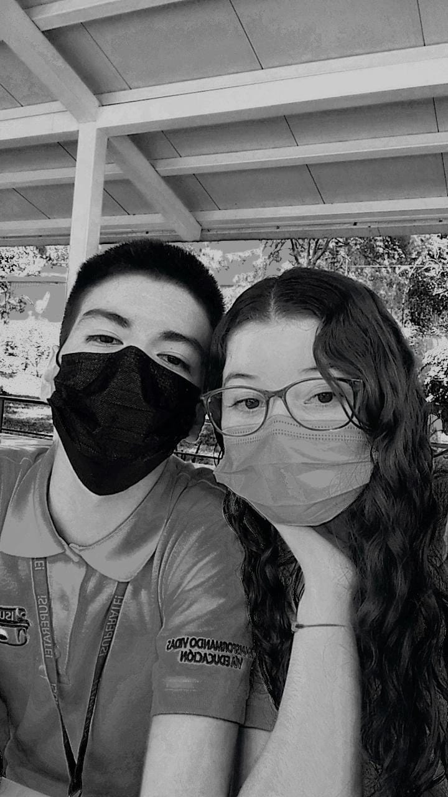

Quien Soy.
1 Yo:
Mi nombre es Valeria Yamileth Elías Acevedo, considero que soy una persona amable, responsable, con la disposición de poder ayudar a los demás, soy alguien llena de valores y quién también los pone en práctica constantemente, me gusta compartir un poco de mí con los demás y hacerlos felices.
2Hobbies:
Considero que soy una persona con muy pocos hobbies, entre estos está la lectura, mi libro favorito se titula "Brillarás", de la escritora argentina Anna K. Franco, otra de mis cosas favoritas es el poder relajarme y escuchar la música de mis artistas favoritos: Shawn Mendes y Lana del Rey, aunque también escucho a otros cantantes del género pop en inglés.
3Familia:
Para mí, la familia es algo muy importante, a pesar de ser alguien que tiene a su familia un poco lejos, sigo considerando que son importantes, mi familia para mí es mi mamá, una mujer que admiro demasiado, quien está para mí siempre.
4Amigos:
Los amigos para mí son algo muy importante también, soy una persona de pocos amigos, pero los pocos que tengo son personas que siempre me apoyan y están para mí, entre los más importantes están: Mi mejor amigo Immer Loarca, Daniela Morán, Carlos Soriano, Melissa Guzmán y mimejor amiga Alisson Martínez.
5Gustos:
Me gusta salir y conocer lugares nuevos, adoro salir a la playa, no importa cual sea, siento que la playa es como "Mi lugar favorito", me gustaria salir a más lugares como la montaña, pero quizá será un sueño que lograré cumplir luego. En cuanto a intereses profesionales, mi sueño siempre ha sido estudiar un doctorado en medicina.
Familia y amigos.
 



Gustos e intereses.
Mi libro favorito.
Lana del Rey.
Shawn Mendes.